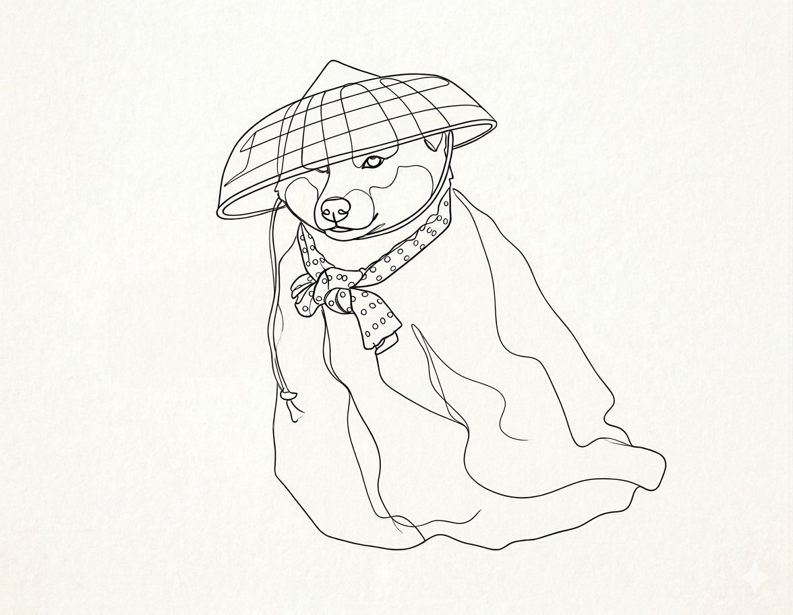

Mi historia

De niños, todos teníamos esa profesión soñada que queríamos ejercer de mayores: futbolista, actor, médico, bombero… Casi todos los niños soñábamos con tener el trabajo más guay de todos, porque ¿quién no querría ser bombero, salvar a gente, que te consideren un héroe y, encima, vivir de ello? Yo, por mi parte, encontré mi profesión guay gracias a Los Hombres de Paco, cuando tenía seis años.
A medida que vas creciendo, tanto tu vida como tus circunstancias cambian. Te deja de gustar aquello con lo que soñabas de pequeño, encuentras algo mejor o decides que, simplemente, era un sueño de niños. Luego, hay otros niños que crecen y mantienen una misma idea en su cabeza, un mismo sueño que acaba convirtiéndose en un objetivo. Yo soy uno de esos.
Yo también quería ser un agente del CNI, como Lucas; investigar bandas de crimen organizado, como Paco; tener reuniones con altos cargos de la Interpol, como Don Lorenzo. El "problema" es que, a mis 27 años, esto no ha cambiado. Ha evolucionado, pero se ha mantenido con su esencia.
Esto fue lo que me llevó a convertirme en criminólogo y adaptar mis conocimientos criminológicos a un entorno digital moderno para buscar donde a otros no se les ocurriría.
Hay una frase que mi madre me repite muy a menudo cuando me manda a buscar algo y que hoy me define como investigador:
“Deja, que ya lo busco yo.”
Mamá, que sepas que he hecho mía esta frase, y cuando alguien necesita que le encuentre algo desde las entrañas del mundo digital, es mi respuesta: “Deja, que ya lo busco yo.”
Mi madre, Los Hombres de Paco, y, entre otras cosas, mi cabezonería, son las cosas que me han llevado a seguir, 20 años después, con los mismos sueños e ilusiones que comencé a tener cuando tenía 6 años. Y esto, de manera muy resumida, es la pequeña presentación que te puedo hacer de Fernando Albarrán, criminólogo y analista de inteligencia.
Ahora comprendo que la verdadera defensa no reside únicamente en la tecnología instalada, sino en la capacidad de anticipar el movimiento del adversario. Cada ser humano es un vector vulnerable de ataque y eso, lo entiendo a la perfección. Mi enfoque práctico se basa en la curiosidad constante y el análisis de datos para encontrar el 'hilo' del que tirar en una investigación.
Así que deja, que ya lo busco yo.